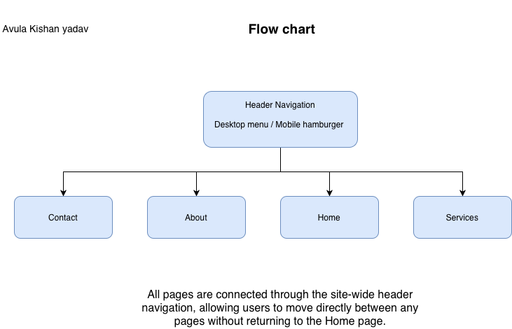

Goal
The goal of this website is to promote 100SMILES Dental Care and increase patient engagement by providing clear information about the clinic and simple ways to get in touch. The site aims to increase online enquiries and appointment requests by 25% within six months by improving mobile usability, simplifying navigation, and placing clear calls-to-action on every page. and reduce phone calls that ask basic questions such as opening hours and services.
Success Evaluation
Success will be measured by monitoring website analytics and enquiry data over a six-month period. Key performance indicators (KPIs) include:
- A 25% increase in contact form submissions and email enquiries compared with the previous six months.
- A 15-20% reduction in phone calls asking for basic information such as opening hours and address.
- An increase in the average time spent on the site to more than two minutes per visit.
- Positive comments from patients about how easy the website is to use when booking appointments.
Target Audience
The primary audience includes adults aged 25-55 living in the Razole area, particularly those who are responsible for booking health appointments for their families. The site is also aimed at families with children under 16 who are looking for a friendly local dentist.
The design uses a calm blue-and-white colour scheme, clean layout and friendly imagery to build trust and reduce anxiety about visiting the dentist. Text is written in clear, non-technical language and large headings are used so information can be scanned quickly by busy adults.
Site Structure
The website consists of five main pages, all linked from a consistent navigation bar on every page:
- Home - Overview of the clinic, key selling points and main calls-to-action.
- Services - Detailed information about treatments, modern technology and current offers.
- About - Clinic history, mission, values and staff profiles.
- Contact - Location, opening hours, contact details and enquiry form.
- Plan - This planning document explaining goals, structure and design decisions.
The navigation menu appears at the top of every page so users can move directly between any two pages at any time. This means all pages are connected to each other through the navigation, not just through the Home page.
Flowchart
The following diagram shows how the main pages link together:
The arrows in the diagram indicate that each page can be accessed from any other page using the site-wide navigation bar, ensuring that visitors are never more than one click away from key information such as services and contact details.
Design Features
- Blue and white colour scheme to create a clean, professional medical feel.
- Simple fonts (Poppins and Open Sans), clear headings and short paragraphs for easy scanning.
- Responsive layout that adjusts to mobile, tablet and desktop screen sizes.
- Images supplied or approved by the client to show real-world dental settings and smiling patients.
- Add hamburger menu for easy usage in mobile.
- Using validateForm with confirmation and error checking.